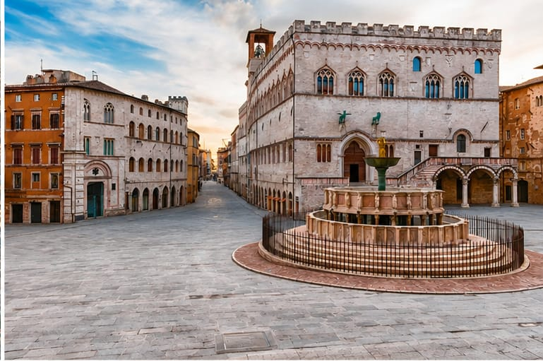
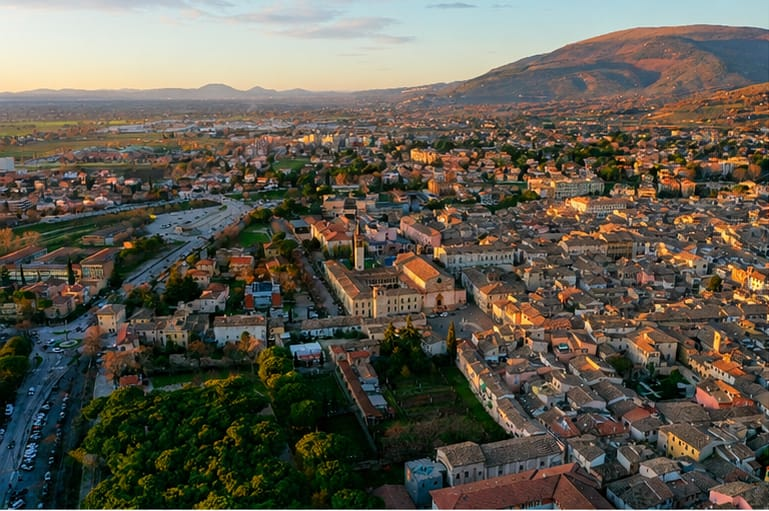
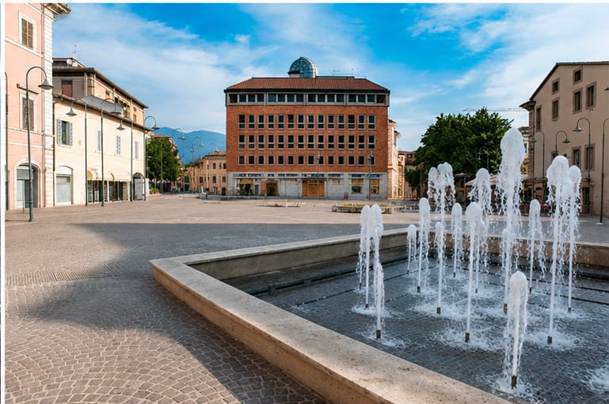

Analisi della zona
Valutiamo il territorio, i quartieri, le abitazioni, le attività e le caratteristiche dell’area.
Organizziamo distribuzioni mirate di volantini, cataloghi e materiale pubblicitario, trasformando il territorio in un canale di comunicazione concreto.
Non partiamo dal numero di volantini da consegnare. Partiamo dall’attività, dal pubblico che desidera raggiungere e dalle caratteristiche reali della zona.
Prima di distribuire osserviamo il territorio, le abitazioni, le attività, le distanze e il pubblico che la comunicazione deve raggiungere.
Una distribuzione efficace nasce molto prima dell’arrivo sul territorio.
Bisogna comprendere quale pubblico raggiungere, quali zone selezionare, quale quantità utilizzare e come organizzare il lavoro affinché il materiale venga distribuito con ordine e attenzione.
La Piramide affronta ogni distribuzione come un progetto: osserviamo il contesto, definiamo il percorso e organizziamo ogni fase secondo un metodo preciso.
L’obiettivo non è consegnare il maggior numero possibile di volantini. È utilizzare ogni materiale nel modo più utile per l’attività che ci ha scelto.
Valutiamo il territorio, i quartieri, le abitazioni, le attività e le caratteristiche dell’area.
Prepariamo il materiale e definiamo percorsi coerenti con gli obiettivi della campagna.
Portiamo il materiale sul territorio con attenzione, continuità e rispetto degli spazi.
Il cliente deve comprendere come viene organizzato e svolto il lavoro.
La fiducia non dovrebbe mai basarsi soltanto sulla parola. Deve diventare un fatto concreto e verificabile.
Il principio che guida le Distribuzioni della Piramide.

Quantità, tempi e zone vengono organizzati prima dell’inizio del lavoro, evitando improvvisazione e dispersione del materiale.
Lo stesso metodo che guida La Piramide viene applicato anche al lavoro quotidiano sul territorio.
Analizziamo la conformazione dell’area, la presenza di abitazioni e attività e le caratteristiche del pubblico.
Comprendiamo cosa deve comunicare l’attività e quali persone possono essere maggiormente interessate al messaggio.
Selezioniamo zone, quantità, tempi e modalità in base alle reali esigenze della distribuzione.
Prepariamo il materiale, suddividiamo le aree e coordiniamo l’intervento sul territorio.
Raccogliamo informazioni sul lavoro per offrire maggiore chiarezza e individuare eventuali criticità.
Ogni distribuzione diventa un insegnamento utile per migliorare quelle successive.

Per questo documentiamo le attività svolte e raccontiamo il lavoro reale, senza costruire promesse che nessuno potrebbe garantire.
La distribuzione richiede fiducia. Per questo lavoriamo per rendere ogni intervento più organizzato e comprensibile.
I controlli non servono a creare una falsa promessa di perfezione. Servono a migliorare il coordinamento, individuare eventuali criticità e offrire al cliente una visione più chiara del lavoro svolto.
Suddivisione preventiva delle aree.
Organizzazione delle quantità.
Verifica delle zone interessate.
Comunicazione trasparente con il cliente.
.jpeg)
Queste immagini documentano una distribuzione locale svolta a Todi. Un lavoro di dimensioni contenute, ma organizzato con la stessa attenzione riservata a ogni progetto.
Non utilizziamo fotografie generiche per rappresentare ciò che facciamo. Preferiamo mostrare il materiale, gli spostamenti e le diverse fasi di un’attività realmente eseguita.
Perché la trasparenza parte dal mostrare la realtà.
Preparazione e avvio del lavoro.
.jpeg)
Materiale pronto per il territorio.
.jpeg)
Organizzazione delle consegne.
.jpeg)
Percorso operativo.
.jpeg)
Il lavoro procede zona dopo zona.
.jpeg)
Attenzione durante ogni passaggio.
.jpeg)
Presenza diretta sul territorio.
.jpeg)
Continuità nel percorso.
.jpeg)
Una campagna locale costruita con metodo.
.jpeg)
Materiale consegnato progressivamente.
.jpeg)
Controllo delle diverse aree.
.jpeg)
Un lavoro concreto, senza rappresentazioni artificiali.
.jpeg)
Le ultime fasi della distribuzione.
.jpeg)
Conclusione del percorso operativo.

Centri storici, quartieri residenziali, frazioni e aree commerciali richiedono tempi, percorsi e organizzazioni differenti.
Il lavoro viene progettato in base al formato, alla quantità, al pubblico e all’obiettivo della comunicazione.
Distribuzione destinata a famiglie, quartieri, centri abitati e zone selezionate.
Materiali strutturati dedicati a offerte, collezioni e presentazioni aziendali.
Materiale rivolto a negozi, uffici, strutture e punti commerciali selezionati.
Interventi costruiti intorno a comuni, quartieri, frazioni o aree specifiche.
Distribuzioni suddivise in più aree e differenti fasi operative.
Valutazioni costruite sulle necessità dell’attività, senza pacchetti uguali per tutti.
Distribuire in un centro storico non è come distribuire in una zona residenziale. Lavorare in un comune non è come organizzare una campagna su più territori.
Distanze, densità abitativa, accessibilità, tipologia degli edifici e conformazione delle aree influenzano direttamente l’organizzazione del lavoro.
Per questo ogni distribuzione viene valutata singolarmente. Non esistono quantità, tempi o costi universali validi per qualsiasi progetto.
Partiamo dall’obiettivo che l’attività desidera raggiungere.
Quantità, zone e modalità vengono valutate in base alle necessità della campagna.
Una distribuzione aumenta la visibilità, ma nessuno può garantire vendite automatiche.
Il cliente deve comprendere come viene organizzato e svolto il lavoro.
La conoscenza diretta del territorio permette di affrontare ogni zona con maggiore consapevolezza.
Un volantino deve prima attirare l’attenzione e comunicare con chiarezza. Solo dopo può essere portato sul territorio.
Grazie alle competenze della Piramide possiamo affiancare alla distribuzione anche la progettazione grafica del materiale pubblicitario.
Definizione del messaggio e dell’obiettivo.
Realizzazione del materiale pubblicitario.
Organizzazione e consegna sul territorio.
Raccontaci la tua attività, la zona che desideri raggiungere e il materiale che vuoi distribuire.
Valuteremo insieme quantità, territorio e organizzazione, senza proporti un pacchetto standard.
Indica la zona, la quantità approssimativa del materiale e il periodo nel quale desideri realizzare il lavoro.